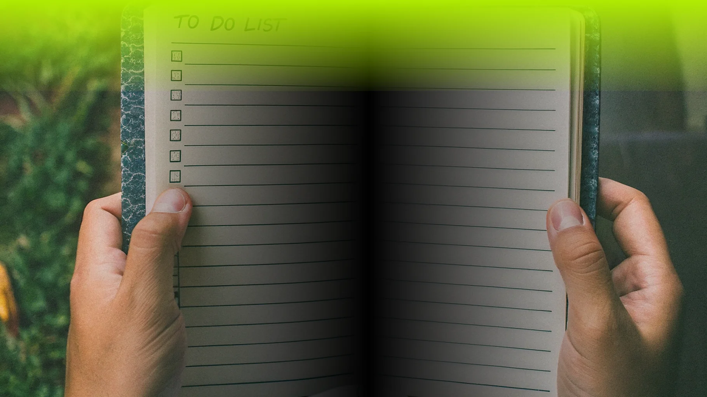

Эко-привычки, основанные на природных сигналах:
как использовать знания о природе для устойчивого образа жизни
1. Наблюдайте за природными циклами
Следите за сезонными изменениями и используйте их для планирования своих действий. Например, покупайте сезонные продукты, чтобы поддержать местных фермеров и снизить углеродный след от транспортировки.
2. Используйте природные индикаторы
Наблюдайте за поведением животных и растений, чтобы предвидеть изменения в окружающей среде. Например, птицы могут предупреждать о надвигающихся штормах, а растения — о засухах.
3. Энергоэффективность
Включайте свет только тогда, когда он вам нужен, и используйте энергоэффективные приборы, чтобы снизить энергопотребление и выбросы парниковых газов.
4. Экологичный транспорт
Используйте общественный транспорт, велосипед или ходите пешком, чтобы уменьшить выбросы от транспорта. Внедряя эти привычки, вы не только будете жить в гармонии с природой, но и улучшите свое здоровье и качество жизни.